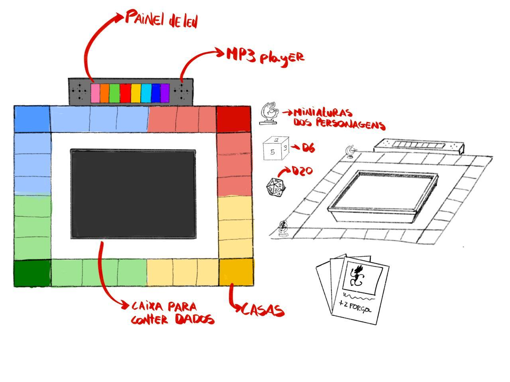

O projeto "Manguetown: do Recife ao caos" foi um projeto que surgiu com o intuito de colaborar com a inclusão de disléxicos e pessoas com deficiência cognitiva no universo dos jogos de tabuleiro.
Usando o mímimo possível de palavras e adaptando a compreensão dos jogos por meio de símbolos, produzi, junto ao meu grupo, um RPG acessível atrelado a um arduíno, o qual programamos para:
Nosso protótipo físico foi feito com o propósito de ser repleto por símbolos e simplificar a visualização do tabuleiro, facilitando a jogabilidade para nosso público alvo para inclusão.
